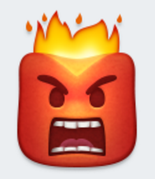
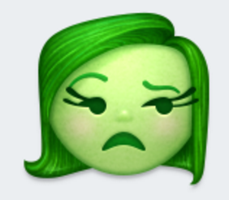
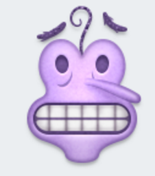

Understanding your scores
Low Value:
< 50 : That tone is less likely to be perceived.
High Value: > 75 : This tone is highly likely to be perceived.
How it works
This web application is power by the IBM Watson Tone Analyzer service. It is based on findings in the field of psycholinguistics, which explores the relationship between linguistic behaviors and psychological theories. Your text input is fed into this automated service which computes the scores listed above. Research has shown a strong correlation between word choices and personality, emotions, attitudes, and thought processes. For more information on the science behind this service, please visit:
IBM Watson Tone Analyzer API


